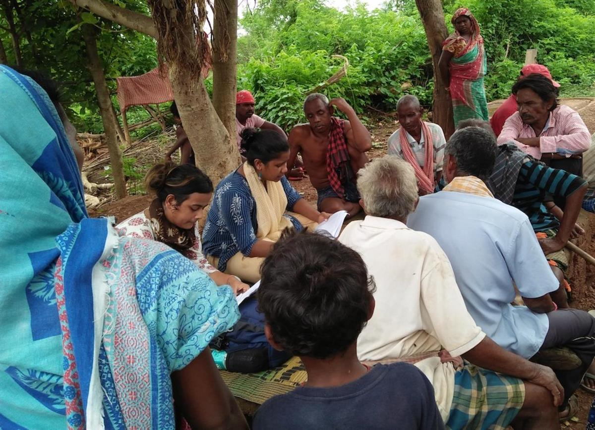
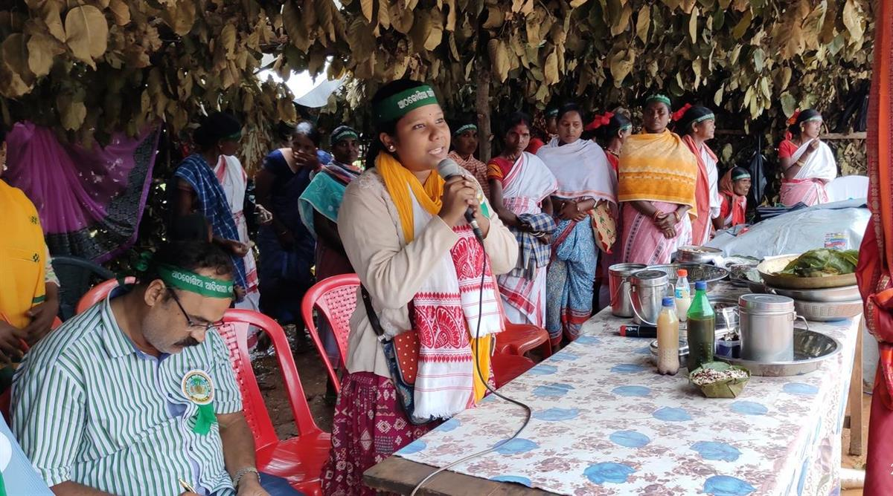

CLIMATE|#Conservation|PORTRAIT
Published on 16 April 2021, 05:57
Archana Soreng: Indigenous youth are the bearers of their cultureArchana Soreng is an environmental activist and one of the seven members of the UN secretary general Antonio Guterres’ youth advisory group on climate change. For the 25-year-old indigenous researcher, young indigenous people have a key role in passing on the wisdom of their elders that can help the world protect the Earth.
A member of the Kharia tribe in Odisha in Eastern India, Archana Soreng has dedicated her work to collect and document the practices of her community and other tribes in her region. On Wednesday, she spoke at the International Union for the Conservation of Nature’s Global Youth Summit about the role that indigenous youth plays in conservation through documenting and transmitting their traditions and cultures that could provide solutions to address global environmental challenges.
A childhood intertwined with nature. Growing up, nature was at the heart of her family’s reason to get up in the morning. Her grandfather, who was the first to establish forest protection committees in her community to patrol the forests looking out for illegal timber loggers, taught her that “living in harmony with forests and nature and taking care of them is the only way to have a sustained way of living”.
Her father, a professor and an indigenous health practitioner specialised in snake bites, would heal his patients with roots and leaves. Despite not having a formal education, he could rely on the traditional knowledge passed down to him by his own father.
“My surname Soreng means rock,” she said. “This shows how intertwined us indigenous peoples are with nature.”
Living in one of India’s most important regions for coal, steel and other mining activities, Soreng was aware of how ecosystems are being degraded at an accelerated rate. India has the fifth world’s largest coal reserves, with Odisha holding over a quarter of those deposits.
“Both my parents, my father and my mother had been part of the tribal rights movement, and told me that if you really want to make a change in society, you have to enter into policymaking. That is what stayed with me forever and that is what has inspired me,” she said.
While studying governance, Soreng realised that a lot of the things she was reading in books about eco-friendly practices and solutions to climate change were already being implemented by her community and other indigenous groups, but without getting the due credit. And even when they did, it came from non-indigenous authors.
“At that point of time, in 2017, I also lost my father, which made me realise that our indigenous leaders will not be there with us for long and now is the time to document and go back to our leaders about their traditional knowledge and practices,” she said.
Soreng also realised that for indigenous communities to be able to contribute to climate action, their rights needed to be recognised. This is what motivated her to become an environmental and indigenous rights activist.
Getting the youth involved. Soreng’s work has been aimed at rallying and encouraging other young indigenous people like herself to contribute to mainstreaming indigenous knowledge. She runs with her brother the youth-led platform Adivasi Drishyam, gathering the cultural eco-friendly practices of different tribes, including dance, music and food, and showcasing them through Youtube, Facebook and other social media.
“Every tribal group is unique, but what remains constant is their relationship with nature,” she said.

Archana Soreng at Ambapadia village in Khorda district, Odisha. (Photo courtesy of Archana Soreng)
One of the practices Soreng has documented and showcased is women forest patrolling. Back in the 1980s, when timber illegal logging groups – commonly known in India as “timber mafia” – were devastating the forests in Nayagarh District, men from the Kondh Tribe would patrol the forests, often sparking confrontations with the loggers.
To avoid conflict, women were asked to come along during patrols. Since India’s laws against attacking women are harsher, they would act as better deterrents. But very rapidly, women demanded to be included in decision making processes and successfully took over daytime patrol shifts. For the past 40 years, the sound of sticks hitting together has been enough to send any illegal logger running. “[They] know women are coming, and if [they] catch them, [they] will take them to the village”, risking punishment, Soreng explained.
“Women are protecting the forests because they feel that it is their child. They need to take care of the forest, and similarly forests will take care of them when they get old,” she added, noting that unfortunately women struggle to get recognition for this work.
The protection by the community of these forests has also helped restore the soil that had been eroded due to deforestation affecting cultivation.
Tribal communities, including the Kharia tribe where she comes from, could also contribute to solving the global plastic problem. They for example collect leaves from the forest and then stitch them together with splinters to make plates. They use grass, to make chairs, coconuts to make resistant ropes for beds and twigs to brush their teeth.
“Because it is biodegradable, it can be an alternative to plastic, which can be adopted by the people in the cities,” she noted.
Unfortunately, a lot of these ideas have been “high-jacked”, according to Soreng. Indigenous communities do not receive due credit and often, when their products are purchased by retailers, they receive very low compensation compared to the final price at which they are sold to customers. As the world slowly shifts towards a more sustainable model, indigenous peoples must be recognised for their input and supported so that they can play a bigger role, she argues.
One of the tools that indigenous youth has brought to the table is social media. “Social media has acted as a platform where we can showcase our story and our voice, where we can highlight our perspectives, where if people don't give us space, we can create our own space,” she said.
Young voices finally taken seriously. When Guterres launched his youth advisory group on climate change last July, Soreng saw it as a sign that young voices were finally being taken seriously. Nine months in, she is happy with the work that they have accomplished.
“This has given us an opportunity to access spaces, wherein we can put across the voices of youth,” she said.

Soreng speaking at an annual gathering in Sundergarh district, Odisha. (Photo courtesy of Archana Soreng)
While feeling optimistic about global leaders finally giving young people a seat at the table, she says that there is still much work to be done. “All the countries and all the United Nations agencies need to continue this process so it's not just a token representation of youth. It has to be a holistic participation and meaningful leadership of the young people,” she said.
She points out that there is a need for young leaders from different backgrounds, those with education as much as those without one, to be identified. And for this to happen, UN agencies and governments have to specifically work on making information accessible in local languages. “I strongly believe that language justice is climate justice. There are a lot of languages being spoken by a lot of young people and indigenous communities, and it has been one of the barriers in terms of accessing information,” she noted.
Within indigenous communities, the rift between older generations and younger ones is also a challenge that needs to be addressed. Non recognition of land rights of indigenous groups often leads to land grabbing and to people being displaced, with many young ones fleeing to cities. “This leads to a breaking of the relation of the young people and their lead generation and to a not so smooth transition of traditional knowledge,” she explained.
“I strongly feel that we need to learn from the older generation about their knowledge and practices but at the same time the older generation also need to be open about the young generation about the creative ideas, about the entrepreneurial skills, and about their interests,” she added.
SOURCE: GENEVA SOLUTIONS